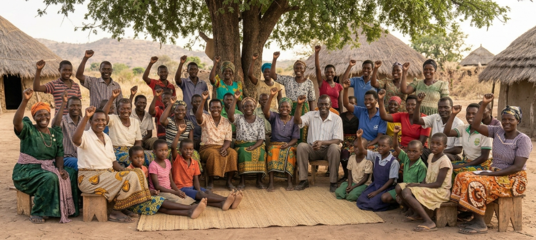
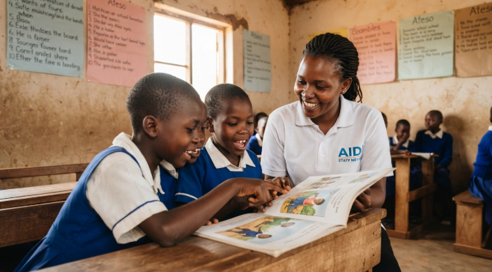
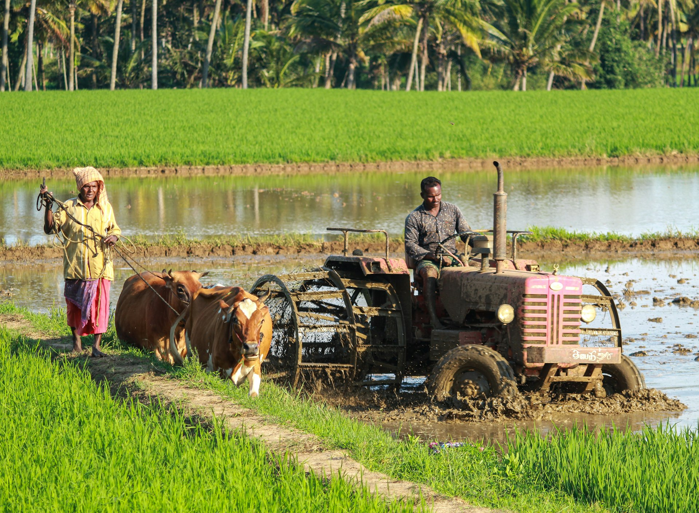
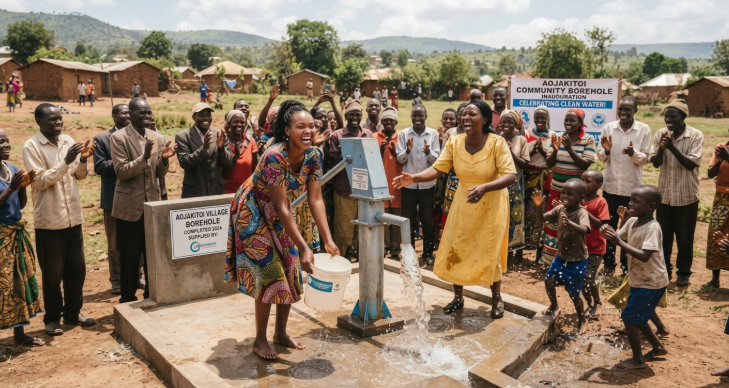
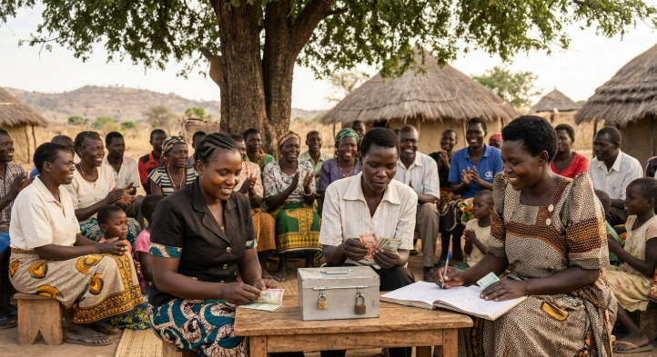
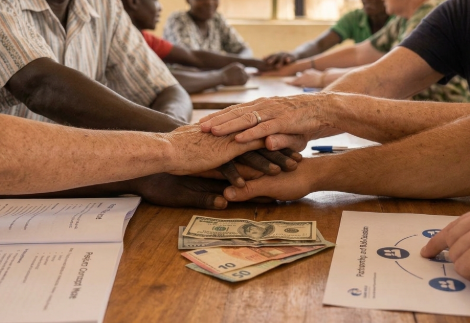
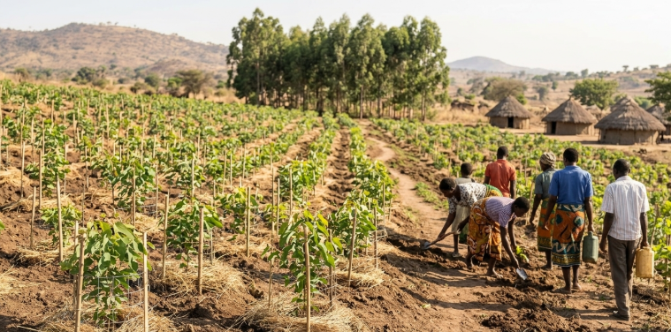
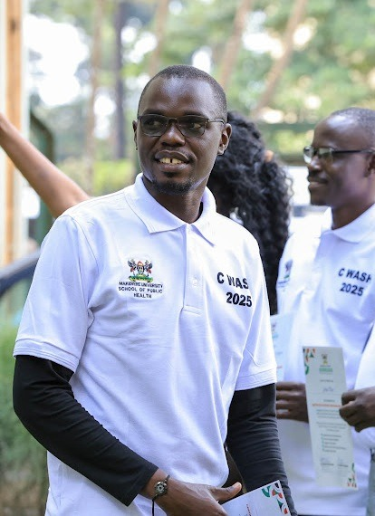

Founded
Aojakitoi Parish, Amuria District
AIDI Uganda is a community-rooted initiative transforming lives across Teso and Karamoja, through education, climate-smart agriculture, health, advocacy, and partnership. We don't just serve communities. We grow with them.
Rooted in community. Working together across regions.
Born from the community, for the community.

AIDI is a local, not-for-profit community-based organisation (CBO) in Uganda. We are non-partisan and non-denominational, serving communities regardless of religion, tribe, colour, or race.
Our work is organised around five core objectives and guided by a simple belief: that development works best when it is locally led.
AIDI emerged from a clear-eyed reading of the realities facing our communities. The experience of pandemics and disease, entrenched poverty, harmful cultural beliefs and practices, inadequate service delivery, poor infrastructure, weak agricultural practices, and limited advocacy skills have left many families in situations of extreme deprivation, vulnerability, and displacement. Famine, low skills, and high poverty have become familiar conditions rather than exceptions.
At the same time, the traditional support systems that communities once relied on (community farming support, poverty eradication strategies, capacity-building providers, and lobby and advocacy services) are overwhelmed. They can no longer keep pace with the scale of need. AIDI was constituted to help close that gap.
To mobilise communities for inclusive and collective action in improving infrastructure, advancing commercial agriculture, promoting social inclusion, and improving livelihoods through community engagement and participatory development.
To eradicate poverty and build thriving communities where families can secure livelihoods and shape their own development.
To be a leading community-based initiative promoting infrastructure, sustainable agriculture, climate resilience, poverty eradication, and community empowerment.
AIDI's work is organised around five core objectives.

We promote learning, practical skills, and stronger families through education and support for school infrastructure.

We help communities strengthen farming practices to withstand climate shocks and protect the land.

We promote inclusion, human rights, community health, and support for people facing vulnerability.

We support savings, enterprise skills, and stronger livelihoods beyond subsistence farming.

We work with local and international partners to advance community-led development.

We encourage practical community action to care for land, water, and natural resources.
Rooted in Teso, reaching the hard-to-reach.
AIDI is rooted in Aojakitoi Parish, Kuju Subcounty, Amuria District, and works with communities in Teso and Karamoja.
Open Pin in Google MapsFrom a room in Aojakitoi Parish to a growing community movement.
A group of community promoters came together around a shared conviction: the services Teso depends on are stretched beyond capacity. AIDI was constituted to help close that gap.
Our approach begins with the community itself: identifying who is excluded, understanding why, and building the local structures that can carry services the last mile.
We intend to grow our savings and lending scheme from a handful of members to a functioning community financial institution; expand our agricultural work from demonstration to scale; and build genuine protection capacity.
AIDI is governed by a Board of Executives of seven founder members, working jointly with a Top Management and Planning Committee. Day-to-day implementation is carried out by the Secretariat.
Seven founder members. Supreme governing body. Holds charge of the Initiative's assets, resources, and income.
Works jointly with the Board as the supreme decision-making body on all matters about the Initiative.
The Initiative's implementing arm, carrying out day-to-day work in the community.
Oversees staffing, identifying gaps, advertising, receiving applications, and conducting interviews.
Board meets in ordinary session at least twice a year. Financial year runs from 1st January to 31st December.
Accounts subject to both internal audit and external audit nominated by the Top Management and Planning Committee and approved by the Board.

Civil Engineering graduate with experience in engineering, proposal writing, and project management.
Business Administration graduate with finance and administration experience, including community-based social development.
Experienced in monitoring and evaluation with diverse partners, strengthening programme learning, accountability, and results.
AIDI is a local, not-for-profit community-based organisation (CBO). We maintain our independence from public authorities and uphold the fundamental rights of the people.
We cooperate with Government and Local Government Authorities in the districts where we work, on the condition that AIDI retains administrative control over its own funds, personnel, and assets.
"AIDI's constitution commits us to serve regardless of religion, tribe, colour, or race, and to work in partnership with communities rather than at a distance from them. Our approach begins with the community itself."AIDI Founding Principle Aojakitoi Parish, Kuju Subcounty
"Infrastructure is not construction. It is access. A community that cannot reach a market cannot sell its harvest at a fair price; a community that cannot reach a road cannot reach a clinic."AIDI Constitution Article on Infrastructure
"Support that compounds. Every shilling circulated through a structured local scheme keeps working, member after member, season after season."AIDI Economic Vision Savings & Lending Schemes
Join AIDI and communities to build inclusive, locally led development.
Aojakitoi Parish
Kuju Subcounty, Amuria District
Uganda